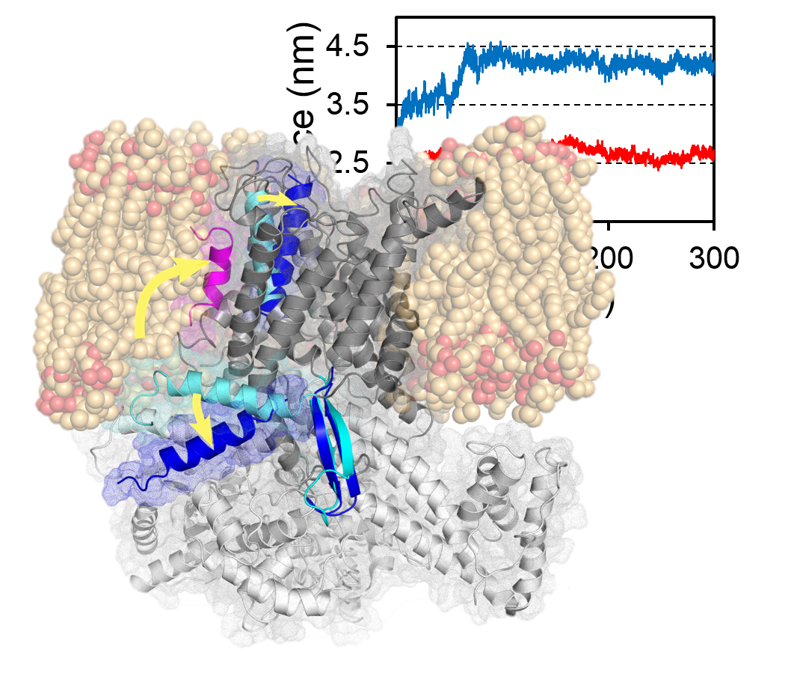
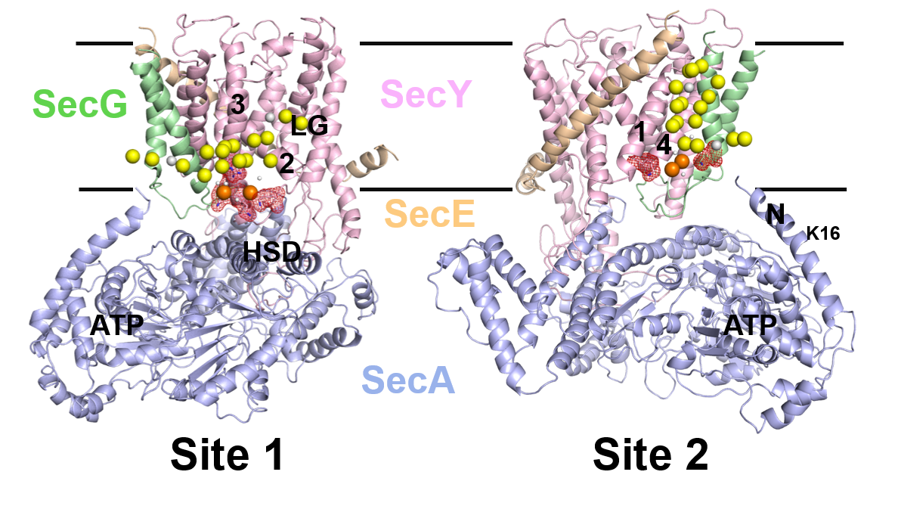

Membrane protein biophysics



We are interested in application of the MARTINI force field towards identification of CL binding sites in SecYEG.We aim to verify the data using experimental techniques previously applied to the same system, as well as using native mass spectroscopy

Currently, we are working on the identification of CL binding sites in Thermotoga maritima SecA-SecYEG. The data reveals the presence of two distinct CL binding sites in SecY, as well as supporting a key role in lipid binding for the N-terminus of SecA. We then validate the putative SecY CL binding sites and demonstrate the conserved nature of the SecY-CL interaction using biochemical and native mass spectrometry analyses of Escherichia coli SecYEG variants.
This work is currently on bioRxiv, and will shortly be submitted for peer review. Click any of the Sec image above to link directly to the current version on bioRxiv